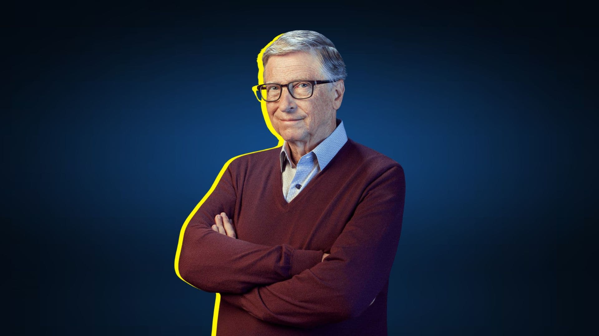
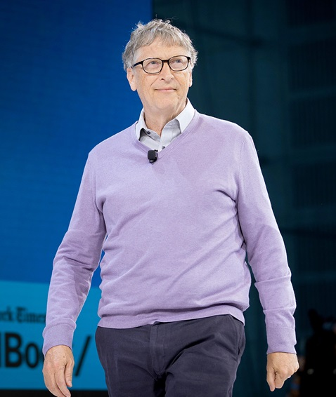

William Henry "Bill" Gates III KBE • GCIH (Seattle, 28 de outubro de 1955) é um magnata, empresário, diretor executivo, investidor, filantropo e autor norte-americano, que ficou conhecido por fundar, junto com Paul Allen, a Microsoft,[2] a maior e mais conhecida empresa de software do mundo em termos de valor de mercado.
Gates ocupa atualmente o cargo de presidente não-executivo da Microsoft,[3] além de ser classificado regularmente como a pessoa mais rica do mundo, posição ocupada por ele de 1995 a 2007,[4] 2009,[5] e de 2014 a 2017.[6][7][8][9] É um dos pioneiros na revolução do computador pessoal.
